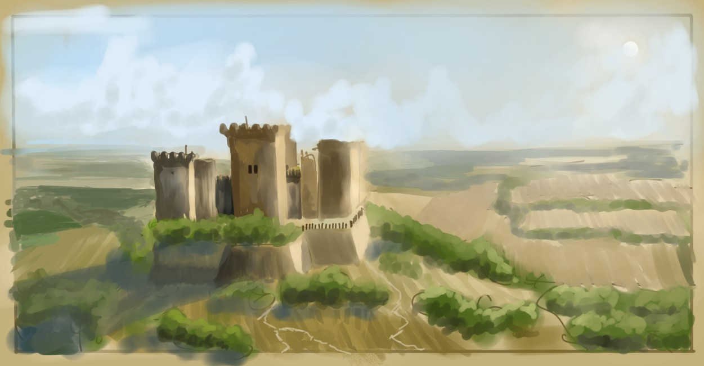

Johnny's Art Gallery
Artist Profile
Hi my name is Jonathan, but I like to go by Johnny. I grew up interested in many things like art, and although art was always just a hobby for me, a place where I could draw anything I wanted, how I wanted. I feel that artists are meant to depict the world they perceive, adding their unique interpretation whether it is stylistic, choice of color or subject matter.
I have selected works that I feel best represent myself - I like to capture moments in nature, like landscapes and seascapes. It makes me feel as if I'm part of another world or experiencing vivid memories of a place I've never been to. Throughout these selected pieces, I intended the central theme to be little moments that characterize how beautiful nature can be.
My Portfolio
Hey! I've selected my favorite personal works here leading up all the way till now! I hope you'll enjoy it!
6th grade
7th grade
Sky Whale (*submitted for a clip studio contest)

8th grade